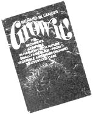

SPECIAL NOTE: GROW IT! is a big book and even if a chunk this size were to be run in issue after issue after issue of MOTHER, it would take over two years to put the complete volume in your hands. If you haven't got two years to play around with, we recommend that you truck on down to your nearest book store and shell out $8.95 for your very own copy of GROW IT! That way, Richard Langer will be happy, Saturday Review Press will be happy . . . and we're betting that you'll be happy too. It's a darn good book.
At last! For the first time since the HAVE-MORE Plan was published way back in the 1940's, a fellow named Richard W. Langer has come up with a 365-page book that really introduces a beginner to small-scale farming. Wanna raise your own fruit, nuts, berries, vegetables, grain, chickens, pigs, ducks, geese and honeybees? GROW IT! tells you how to get started, we like it, and here's another chapter from the book.
EXTRA SPECIAL NOTE: All material here reprinted from GROW IT! Copyright © 1972 by Richard W. Langer.
If I could play on Homer's lyre
And wing with true poetic fire
To what great theme Would 1 aspire?
Barnyard manure!
-Alfred Vivian
Everything on a farm doesn't smell like roses. On the other hand, manure is nowhere near as odoriferous as the average city dweller thinks, and a well-made compost heap doesn't smell at all. Your farm needs both.
Almost from the time man first began domesticating farm animals, barnyard manure - the livestock's excretions mixed with bedding material - was used as a fertilizer to increase the yield of his crops. Some ancient agrarian civilizations, such as the Mayan, never went into animal husbandry on a large scale. It is now hypothesized that many once-great cultures were destroyed not by war, but by the exhaustion of the land surrounding their cities. The local agriculture could no longer support the urban population. All for the want of manure the fabled cities fell? Quite likely.
Agriculturalists used to believe that plants literally "ate" the soil. But with the birth of Justus von Liebig in 1803, the seed of radical change was planted in agriculture. Liebig's contributions to civilization were many and diverse, ranging from baking powder to chloroform. Among the discoveries backed by his chemical laboratory was the fact that plants merely extract certain substances from the soil, specifically, nitrogen, phosphorus, and potash.
From Liebig's new theory there were several corollaries to be drawn, and the nineteenth-century assault on traditional agriculture was soon in full sway. If you added enough of the right chemicals, you could even grow a bumper crop in candor, for that matter, in a water solution. The chemical industry rose to the challenge, and Malthus's dragon was slain. There would be food enough for everyone.
Unfortunately, as with all radical theories that presume to save the world by sweeping away the entirety of man's past endeavors, chemical fertilization and its adjunct, insecticides, did. not turn out to be the panacea expected. Kept in its place, not all chemical agriculture is necessarily evil. But by overshad owing developments in the other areas of agricultural research, test- tube farming has done enough damage so that it could well take another century to reclaim once bountiful farmlands from their artificially imposed fallowness. And the damage done by the insecticides in the long run will prove to far outweigh the good.
What happened was that chemical fertilizers alone were suddenly deemed the essential ingredients of agriculture. No heed was paid any longer to the tilth, or physical quality of the soil. What did the soil matter? Just add more chemicals if your corn wasn't growing and everything would be all right. The only problem was, as more and more chemicals were added over the years, the organic quality of the soil was lost. Once friable, rich earth turned into hardpan. The essential chemical ingredients were there all right . . . the high crop yields weren't. The reason? Simple. You can't grow abundance on macadam.
Finally, in the past couple of decades agriculturalists rediscovered soil-good, natural, organic earth, the way it used to be, and the natural cycle that nourished it. For instance, when you feed your goat hay, you're feeding it plants that took their nutrients from the soil. But the goat doesn't use all the nutrients in the plants. Save the manure and return it to the field, and you're returning nutrients the soil can use to feed the plants to feed the goat . . . . . Manuring, trash mulching, and plowing under cover crops are all ways of restoring the natural organic balance of the earth.
With that in mind, you'll no doubt use your manure rather than let it rot behind the barn. But you also want the best manure possible - yes, even the manure on your farm can be improved - and that takes a bit of planning.
GETTING QUALITY MANURE
The kind of manure you get from your farm your animals depends partly on the kind of livestock you have and what they've beer eating. Animals on a good diet will make better manure. This is why it's so important to think of the farm as an organic whole, a small closed system operating on a cycle of its own. Every improvement you make at one point in the cycle will improve the following parts of the cycle. Feeding your stock the best will result in not only better meat, milk, or eggs, but better manure as well, which when spread on the fields will give better, more nourishing crops, which in turn . . , and on and on. But break into the cycle negatively - skimp on the feed, or let the manure go to waste - and you introduce a declining spiral of quality into your homestead.
In general, the quality of manure increases with the amount of protein in the animals' diet. More protein means higher-quality manure. This is the reason why horses, whose diet is strong on grain, produce one of the most valued manures.
Exceptions to this general rule are young animals, busy growing, and their mothers, busy making milk. They won't produce quite as nutritious manure as the rest of a herd even on the same good diet, because both lactation and body development use up larger quantities of calcium, phosphoric acid, and nitrogen. Technical considerations like these can't always be taken into account, obviously. If you're raising goats for milk, you want the milk . . . the manure is a by-product. You're not going to stop breeding the doe just to improve the manure. You'll simply plan on using more manure per acre during lactation than when the goat is in its dry period. If you buy manure, on the other hand, and are given a choice between that from dairy cows and that from beef cows being fattened, you'll want to choose the latter.
Buying or bartering for manure is not something one normally thinks of in the city. In fact, it's not something many chemical farmers would consider either. But it makes a lot of sense. If you look at your farm as the closed circuit it essentially is, you can see how bringing in manure from outside is adding quality. Whoever sells it to you is actually giving up a very valuable part of his land. Up to 80 percent of all the nutrients gathered by farm animals in foraging is expelled in their manure - the body can utilize only so much of the overall nourishment it receives. So letting manure go to waste is almost like strip-mining your farm.
Manure can lose nutrient value while still in the barn if precautions are not taken. As much as a fourth of livestock urine is lost because of floor leakage, considerably more, needless to say, in old barns with drains to remove the urine to cesspools "out back". A tight cement floor helps retain it. So does good bedding such as dry oat straw. Check the bedding twice a day. Gauge how much you spread out and how much it absorbed. What you want to strive for is balance: enough bedding to absorb all the urine and keep the animals clean, but not so much that the sheer amount of it gets out of hand, making the resulting manure mostly straw. Bedding contributes important nutrients of its own to the all-over manure. However, too much of it, or rough bedding such as cornstalks, may stay on top of a field long after it's spread, rather than breaking down into humus. When you're cutting your next hay crop later in the year, the old bedding will be mixed with the new hay, and you'll end up with a poor-quality crop. Also, of course, using more bedding than you really need is a waste.
STORING THE MANURE
Without proper care manure quickly loses many of its beneficial qualities. Nitrogen, phosphoric acid, and potash are lost through leaching, fermentation, and oxidation. These processes can't be entirely prevented, but with careful storage and protection the nutrient losses can be kept to a minimum. Ideally, spreading manure (except chicken) on the land and working it in immediately is the best preventative. The thing that militates against the small-scale farmer here is that in all probability he won't be keeping enough livestock to produce a quantity of manure sufficient to make immediate spreading worthwhile, except maybe in the vegetable garden. So he must build up his supply, from his own barn and/or his neighbor's. In either case, he'll want to know it's kept well.
The richer the manure, the more rapidly it will lose its value if not carefully stored. Proper storage means protection from the elements. The old way of piling droppings out back in scattered dumps is definitely out. If you must store the manure in the open, it should be collected in one heap, on a slightly concave concrete or hard-packed clay floor to minimize liquid loss. Pile it high, pack it tightly, and make the sides steep. Dent the top a little, forming a depression to collect rainwater. This will prevent the rain from eroding down the sides and washing away nutrients. At the same time, it will keep the manure moist. In dry, windy weather you'll have to wet down the heap somewhat to prevent burning, or overdrying of the manure. With overdrying, it turns white, indicating there has been considerable nitrogen loss and even some shrinkage of organic quantity.
The best way to store manure is in covered concrete pits. Again, the manure should be packed tightly and moistened when necessary. Thus cosily stored, manure will keep well for months. The pit has the additional advantage that it can be used for the production of rotted manure if you happen to have a bumper crop of manure around sometime. Rotted manure is simply aged manure, usually that which has been stored over four to six months. The rotting reduces the total weight of the manure by almost half, but since the weight is lost much more rapidly than the nutrients, well-rotted manure is still good manure, merely in more concentrated form. This means less of a load to haul, and some farmers with plenty of manure around prefer to work with it rotted. Also, in the case of some plants, fresh manure will cause fertilizer burn. To avoid this, well-rotted, or aged, manure is used instead.
SPREADING THE MANURE
If you've stored manure well, it can be spread on the fields at your convenience. Often this means you'll be spreading it in the wintertime, when other work to be done on the farm is at its nadir of the yearly cycle. Spreading manure in winter is fine, so long as the fields aren't covered too deeply with snow, since that would leave the manure exposed to weathering.
A manure spreader can cover in two hours a field that would take you two months with a shovel and wheelbarrow. So it's a real necessity. You can pick up an old out-of-date model very reasonably at a local farm auction that will still serve the small farm well. Till such time as you can buy one of your own, borrow your neighbor's. If you're buying or bartering manure from him, usually you'll find he will also help you spread it. Or perhaps you can have your spreading done by what's known as a "custom man". The custom man has been a rural tradition ever since modern labor-saving devices came to the farm. In most small-farm areas you find farmers with more machinery than their neighbors who want to maximize the utilization of their equipment and thus will offer to use it on their neighbors' land for pay.
The amount of manure to apply to your fields varies with the crops you plant. Truck crops may need thirty tons or more per acre. With hay crops, one ton per acre will produce a good increase in yield, two tons will almost double the yield, three tons will do even better. But there can be too much of a good thing. If you apply eight or ten tons of manure per acre of hay, the nitrogen concentration may become high enough to cause lodging. That is to say, too much nitrogen weakens grass stalks, and the hay mats down to the ground, making it difficult, if not impossible, to harvest. Lodged hay, whether caused by excess nitrogen, a heavy rain, or hail, is not a total loss, since it can be turned over as green manure. But it was a hay crop you were after. Four to five tons of manure per acre per crop is a good average for most soil conditions. Find out what your neighbors are spreading - especially the one with a farm you admire - and what they think of your acreage. They won't be able to give you absolute figures to rely on, but between their ideas and those of your county agent or local agricultural experiment station you'll begin to have a feel for what's needed.
All right then, you may be thinking, if it's going to take tons of manure to fertilize the fields, it's hopelessly out of the question. After all, you were planning on a couple of pigs and goats, or maybe just a few chickens. They'd get you nowhere. Or would they? Four growing pigs will give you almost twelve tons of liquid and solid manure a year. Three goats will give you four tons, thirty chickens two tons. The combined amount of manure from even relatively little livestock is often enough for the acreage in actual use on a small farm.
Not all manure comes from animals. Manure is anything that through its decay introduces organic matter and nutrient, into the soil in compensation for that removed by crops, live stock, and the elements. Green manure, a crop raised for the express purpose of being plowed under, is as much a fertilize as barnyard manure . . . it's just a different kind. Plowing under returns the organic matter of the crop to the soil. In the case of legumes, the most desirable green manure crops, the soil is given additional nitrogen as well. Most plants get their nitrogen from the soil, but legumes, with the aid of certain specific bacteria, have the ability to extract nitrogen from the air.
Green manure is a work-saver as well as a fertilizer. A large part of the organic material derived from green manure is in the form of decaying roots. Alfalfa roots, for instance, grow four or five feet deep into the soil. When the plants are turned over, the roots break down, or decompose, into organic matter at their tips as well as their tops. So water retention and soil quality improve all the way down. To plow those four or five feet deep yourself, you'd have to use dynamite. It's literally been done.
The amount of organic matter retained by the soil is obviously not equal to the total volume of green manure plowed under. For one thing, as the crop breaks down, it shrinks. In addition, during decay some of it disappears into the atmosphere as carbon dioxide. Then again, how much organic matter is retained depends in part on the initial quality of the soil Loamy and clay soil will retain more than sand. Temperature is also an important factor. During hot weather more of the potential organic soil-builder is lost in the form of carbon dioxide than in cool weather. The worst possible combination is sandy soil and tropical heat.
Green manuring will not convert your acreage into a wonder field over one winter. Very little permanent organic matter is added to the soil by plowing under. Even with the best of conditions it may take almost half a century to double the organic matter in the soil. But done wherever possible every year, green manuring will prevent the deterioration of soil quality while improving it enough to increase the yield of the cash crop you plant next on the field by anywhere from 10 percent to 100 percent. A cash crop, incidentally, isn't necessarily one you sell for cash. It's simply a crop that's grown to be used rather than turned over into the field.
Organic matter in the soil is as much a process as it is a substance. That is, the decay of matter is as important as the material itself, for it is this process of decay that releases the nutrients. The different stages of decomposition give the soil different qualities. If a green manure crop plowed under remained as whole dead plants in the ground, the soil would resemble caked clay with hollows and layers of straw. Not conducive to good crops. It is the slow blending of decaying matter, the moisture it retains, and the organic material that give the soil the desired quality. The decay of the organic material continues till there is nothing left. If no new organic matter is introduced, only the claylike quality of the soil remains - or the dustlike quality, as it loses its ability to hold sufficient moisture. This is why organic matter must be continuously returned to the earth. And why it takes so long to build rich soil. For even as you turn over your green manure crop, you're planning what to sow as a cash crop on the same field the same year, a crop that, were man not farming, would also have remained to nourish the soil.
Both grasses and legumes can be used for green manure. Legumes, however, are preferable because they add nitrogen to the soil as well as organic matter.
Inoculation. Legumes must be inoculated before being planted. When I was a kid I thought someone sat around the old seed company with a hypodermic needle giving each little seed an injection. That isn't quite the case. Legume inoculation is done with the suitable culture of single-celled bacteria for the specific seed involved, but on bushels of seed at a time, not individually. The bacteria for clover won't work on alfalfa, or even sweet clover. And don't let the word "bacteria" scare you. If the clover variety won't touch the alfalfa, what do you think the chances of its liking you are? Nil.
Inoculation refers to exposing the seeds to the bacteria, using commercially available cultures, so each seed becomes coated. The seeds must be inoculated the same day they are to be planted, as the bacteria die when out of soil. A culture usually comes in one-bushel size - a plastic baggie with about a cupful of what looks like black soot. Mix with water according to the accompanying instructions, toss into a seed inoculator, or a homemade barrel version, with a batch of seeds, and crank like old-fashioned ice cream until the seeds and inoculating culture are well mixed.
A field itself can be inoculated through previous plant growth. For instance, soil upon which inoculated soybeans have once grown will retain the bacteria long enough to inoculate a subsequent crop of soybeans even if sown a year later. The same holds true for most legumes.
Inoculation is not a preventative against anything. It's a booster. When you want a solution to crystallize, introducing a few ready-made crystals speeds up the process. The same kind of thing is true of inoculation of legumes. You supply nitrogen-fixing bacteria. As the plant develops roots, the bacteria enter the root hairs, immediately forming nodules that become regular little nitrogen factories. The plant supplies the bacteria with nutrients, the bacteria supply the plant with nitrogen. A very productive symbiotic relationship that might still have developed had the inoculation not taken place, but to a much lesser extent and, in the case of a field where that specific crop had never grown, perhaps not at all.
LEGUMES
Sweet Clover. First on your list, especially if you have bees. One of the hardiest of the clovers, this one comes predominantly in biennial form. Will do well in any part of the country where rainfall exceeds eighteen inches, well cycled throughout the year. It can be grown on most types of soil as long as there has been adequate liming. For the bees' honey harvest, let the crop stand till after the blossom stage before you plow.
Ladino Clover. This clover is a rapid-growing perennial two or three times the size of common clover. It does best in the temperate climate of the northeastern states, but is also grown in the Corn Belt. It does not make good hay . . . however, it is excellent for turning over.
Alfalfa. A deep-rooted perennial grown throughout the United States. It fares particularly well in the Midwest and Far West. Most soils will do, but extreme sandiness, clayeyness, or poor drainage will inhibit growth considerably. Good for green manure and hay. But the seeds tend to be expensive.
Trefoil. Comes in two varieties, bird's-foot and big trefoil, both native to Europe. Best adapted to a temperate climate, it is grown chiefly in the northern half of the United States, but can be cultivated anywhere. Big trefoil is the hardier of the two, so moisture-hardy, in fact, it can thrive under semiswamp conditions.
NONLEGUMES
Rye. Your first choice of the nonlegumes. Because of its hardiness, rye is an excellent winter crop. That is to say, you can plant it in fall, at which time it will take root. Winter growth will be minimal but the crop will have a real head start come spring. You can plow under a winter rye crop as green manure before your regular spring planting. Soil requirements for rye are not stringent. Can be grown in any part of the country.
Redtop. The most widely adaptable cultivated grass in the United States. Grows well in all parts of the country except the extreme Southwest. Sometimes called "herd's grass" in the South. Timothy, on the other hand, is sometimes called "herd's grass" in the North. Same herd, different grass.
Timothy. The most important hay grass in the States, despite the fact that it is usually grown only north of the thirty-sixth latitude. A perennial grass growing in bunches, it will not grow in dry sandy soil, needing heavy earth and an abundance of moisture.
PLOWING UNDER
Your green manure crop must be turned over at least two weeks - better yet, three weeks - before planting a cash crop on the same field. Otherwise its initial stages of decay will inhibit seed germination of the new crop and prevent plant growth. After two to three weeks, however, the decaying process will have progressed to the point where the soil is ready to nourish newly sown seeds. During warm weather, complete decomposition of the green manure usually occurs in about six weeks. Disc harrowing the plants two or three times before plowing them under helps speed things along. Cut up, the plants will decay more rapidly.
Your vegetable garden, like your fields, needs both animal and green manure. But plowed-under green manure doesn't really pay here, except as a winter crop to keep the land from lying bare. Plowing under is best left to your larger acreage of field crops. If you have a big vegetable garden - that is, you've gone commercial and are growing vegetables for market - you don't want to waste a cash crop by growing green manure instead. If you have just a small garden for your family, and maybe a roadside stand on the side, the dimensions of the plot won't be large enough to warrant the work of harrowing and plowing under. Then what? Your soil still needs organic material.
Composting is the ideal solution. You make your garden's own green manure in a compost pile, using all the excess vegetable matter on your farm - for instance, spoiled hay, plant tops from the garden, the straw from your wheat harvest, leaves from your orchard. When it's properly aged, spread it on the garden as you would animal manure. And lest you think that because you have a pile of decaying vegetable matter next to your garden the smell will be overpowering - it won't. A well-constructed compost pile doesn't smell at all.
Composting is a natural soil-building process that began with the first plants on earth and has gone on ever since. Leaves falling, ground cover wilting, trees felled, deceased animals and insects decaying, all that once lived gave up its life to the earth. Layers upon layers rotted - not dust unto dust, but life into new life, for from the decay new plants rose, feeding new insects and animals in turn, all in an endless cycle. The compost heap is nothing but an intensification of this natural process. In a good compost heap decay-causing bacteria have an almost ideal environment to multiply like gangbusters. Hyperactive, these bacteria break down the raw material of the compost so quickly that odors have no chance to develop.
What's the best material to use for composting? just about anything organic. The more variety, the better, because some trace elements (those of which only the minutest quantities are needed for plant growth) may be found in a weed more than anywhere else, or in a type of hay, or brewer's waste, or what have you. By mixing as many different things (organic, of course) into the compost pile as you have available, you can only help insure that the compost becomes more nourishing. Some of the more common ingredients are leaves fresh or old, hay, sawdust, wood ashes, garbage, nut shells, garden trimmings, manufacturing scraps such as dried blood, leather bits, sewage sludge, coffee and cocoa hulls, feathers. If it once lived, it can be reincarnated as a plant in your garden. But remember, some animal manure should be added to each pile for its nitrogen content. Chicken manure is excellent. If you have no livestock when you first start, tankage, bone meal, sewage sludge or dried blood available commercially can be substituted for the manure. If this gives you the idea that when you slaughter an animal you should add the blood to your compost pile - that's right. And when you're through eating, add the ground meat bones from the table. Use everything on the farm for something. Waste is just that: waste. The city cliff dweller has forgotten that garbage is an integral part of life, not something to throw away.
The speediest composting is achieved by shredding the materials used. They need not be ground up, but the smaller the particle size, the more rapid the process. A fallen hardwood tree in the forest may take a century to decay into humus. If that tree had been reduced to sawdust and mixed into a good compost heap, it would have yielded rich humus in less than a month. It's the same difference as that between putting a sugar lump and putting a spoonful of fine granulated sugar into your coffee.
If you can't get a shredder right away, however, you can still build an excellent compost heap that will yield humus in three to four months. A compost cage will help the process along and is easy to build.
Make the cage of wire screening so the compost can breathe. You'll be depending on aerobic action. (Anaerobic composting is not recommended for the small-scale operation since it takes more equipment for the best results.) For the same reason, the cage should be no more than five feet square. Any larger, and the center of the pile won't get enough air. You can make it as high as you want, but from the point of view of labor, five feet is about as high as you'll want to go. You'll also want to make the cage in two L sections so you can unhook the sides for easy moving.
A cage isn't absolutely necessary for composting. But besides the esthetics of a neat stack of compost as opposed to a heap, it has two very real advantages. For one thing, the edges of the pile are kept from blowing away. Sudden heavy winds can scatter a heap all over the yard. Of course, it will keep decaying wherever it lands, but that's not what you're aiming for. A more important contribution of the cage is that the sides of the pile are kept perfectly vertical. This prevents rain from leaching away many of the nutrients. Leaching can be minimized even more with shredding.
Floor your compost cage with half a foot of leaves, plant waste from your garden, spoiled hay, or garbage (organic, of course . . . no cans, for instance). Top this with a couple of inches of manure or used bedding from the barn, then about an inch of humus from your last compost heap if you have it, good bacteria-rich topsoil if you haven't. Unless you need particularly acid compost, for blueberries or the like, the final layer should be a thin sheet of ashes, granite dust, finely ground limestone rock or phosphate rock, to give the heap good mineral balance. Water the layer down, but don't compress it. Remember, the center of the pile has to breathe.
After you've watered down your first batch of ingredients, build a second layer onto it, again starting with half a foot of organic material and progressing from there. Keep adding layers till you reach the top of your cage. You should have plenty of organic material around even with only two or three acres of land. However, if you can't fill the cage all in one day, you can add to it as you go along.
The very top of your bin of compost material should be slightly concave so that a depression forms to catch rainwater. Even so, you'll have to check regularly to see that the pile stays moist. Should it begin to dry out, wet it down again.
A few days after completing your compost pile, you'll notice it shrinking, or settling. At its center the temperature is now reaching 150°F, so if you have any ideas about introducing earthworms to speed things up, forget it . . . they'd only end up being baked. Compost piles using only plant material, as opposed to ones to which manure has been added, can be used in conjunction with earthworms to make compost, but it's a slower process.
After two weeks of brewing, your compost is ready for a stir. Unhook the two sections of the cage and move it so that it stands empty next to the pile, which by now is holding its own shape. With a pitchfork peel off the top layer of the pile and toss it into the bottom of the cage. Then strip down the sides of the pile, about half a foot thick, and toss them in. The center of the pile decays the most quickly, so by making the outside the inside as you turn the pile, you get more even decay. Now, layer by layer, add the rest of the old pile to the new one in the cage.
Turn the pile again the same way after another three weeks, and a third time two weeks after that. In twelve weeks it's well-done.
Shredding your compost material speeds up the process of decay to such a degree that this method is often called "two-week" or "fourteen-day" composting. And it really works that quickly.
Compost ingredients shredded before stacking decompose more rapidly for three reasons. First, although the original amount of material you're working with is the same, its total surface area is greatly increased. A piece of paper, for instance, has six sides. Tear it in half and the two pieces of paper together have twelve sides. Tear the two again and . . . . . The multiplication of surface areas in shredding is phenomenal, and the surface area is where the decay-breeding bacteria live and work. This brings us to the second advantage of shredding. Small shreds let more air into a pile through the spaces between the solid material. More air means more bacteria can sustain themselves in their job of breaking down the compost. The third advantage is more moisture penetration, which also boosts the bacteria population.
Shredding compost saves the farmer work. You'll need a shredder, of course, but it's not the major investment some other farm equipment is.
By shredding the material before composting, with the subsequent increased bacterial action, you don't have to carefully build up layers of the various materials in your compost cage. Just shred the stuff, dump it in, and wet it down. Add a bit of humus on top of the pile to insure the introduction of bacteria - like a yeast cake to dough.
By the third day your compost heap should have begun to heat up. You can use a thermometer to test the inside of the pile, but why bother? Just stick your hand into it a ways. Thus you can check to be sure it's moist as well as warm. If it isn't warm, slide the cage off and turn the pile over into it, adding more nitrogenous material throughout. This is rarely necessary if you've added a good quantity to begin with.
Assuming the heap began heating on schedule, on the fourth day it should be turned. Moisten it down again after upending it. Be sure not to get it too wet, however. You don't want excess water to leach out nutrients and drain them off into the soil. It's not a bad idea to have your compost cage set on a sheet of plastic or a cement slab as an additional precaution against leaching.
The compost pile should be turned again on the seventh and on the tenth day. Moisten as necessary to keep it damp throughout. If all this turning sounds like a lot of work - it isn't. Shredded material is light and fluffy. You may not think you're tossing around pillows, but it won't break your back either.
By the fourteenth or fifteenth day your compost will be ready enough to apply on your garden. It will be rich; dark, and crumbly. Not as fine as pure humus, which is the next stage in organic decomposition, but fine to use. If you want potting-soil quality, let the pile age another one to three weeks.
But, you say, I intend to have a big vegetable garden. Certainly a pile of leaves and chicken droppings won't supply me with enough compost fertilizer. Well, let's see. Suppose you had a five-foot-square compost heap and piled it five feet high . . . that's a hundred and twenty-five cubic feet. The finished compost will have a volume of around ninety cubic feet. That's almost two tons' worth by weight. If you keep composting, spring, summer, and fall - say, for six months or so - by the end of this period you'll have made eight bins of compost. The total yield in good, high-quality humus will be over fifteen tons. Fifteen tons of humus a year will fertilize the soil in a very large vegetable garden and still give you some left over for the orchard and berry bushes.
As an interesting aside on what composting may hold for the future farm and self-sufficiency, anaerobic manure digesters have been designed that turn manure into humus. They operate in an airtight chamber, and as the manure breaks down, the liberated methane is piped off into a storage tank. From there it goes to the kitchen stove as cooking fuel. You can heat the house, generate electricity, cook your dinner, and still have organic fertilizer for your fields. There are actually some of these devices in use in Europe.
One English chicken farmer carries the process even further by having a chicken-manure digester in his car and a storage tank for the methane produced by the anaerobic action. He runs his pollution-free engine on the methane. Detroit would never buy the idea, however. A 1000-chickenpower Cadillac doesn't have the'right sales appeal.
Like most sound agricultural practices, liming the soil was the custom thousands of years ago, particularly in ancient China. It did not become a general farming practice in the United States, however, until the twentieth century. This was partly due to the fact that the New World's soil was virgin, and thus not in need of lime. Why bother when things grew as well here without lime as in the Old Country with it? But again, it was discovered that soil is not an endless reservoir, that it must be replenished. Today most farmers use lime on their fields, particularly in regions of heavy rainfall where it is easily leached away.
The amount of lime needed by the land varies considerably from region to region. Find a neighbor whose crops you admire and chat with him. Almost everyone loves to give advice. You don't have to take it word for word, but it will give you a good foundation for comparison.
The principal functions of lime in the soil are correcting soil acidity and supplying calcium as a plant nutrient. Soil that is too acidic does not readily give up its nutrients to plants . . . lime helps liberate those nutrients. If other soil conditions are good, the failure of such lime-loving crops as clover and alfalfa may indicate the need for liming your land. Of course, it's preferable to avoid the acidity rather than find out about it through crop failure. To this end, making a practice of liming all crops, particularly the legumes - excepting only the real acid-lovers like berries, radishes, watermelons, and potatoes - forestalls frustration.
The pH Factor. The degrees on a thermometer indicate temperature. On a warm spring day you can tell it's in the 70's. . . you're familiar enough with that form of measurement to guess pretty accurately within what range the temperature falls. There's no more mystery behind pH. It's simply a scale, like that for checking temperature, upon which to measure the acidity/alkalinity of a substance. In the same way that you can guess the temperature, a farmer with experience supposedly can taste and feel and look at a handful of soil to determine approximately what the pH is and what crops will grow well in it. As a beginner, you'll need a pH-testing kit.
The pH scale runs from the extreme acid of zero to the extreme alkaline of 14. Conveniently located in the middle is 7, which is neutral. The full range of zero to 14 includes much too extreme acid/alkaline conditions for most plants. Agricultural land usually ranges from a pH of 4 to one of 8, with most fruits and vegetables doing best in slightly acid 6.5 to neutral 7 soil, and legumes doing better in 7 to 7.5 soil.
Soil Testing. There's nothing wrong with the old tried and true method of tasting the soil to see if it's sweet and alkaline or sour and acidic . . . except that it doesn't give you an accurate pH reading, and unless you've eaten a lot of dirt and know what flavor you're after, it's going to taste, well, like earth.
You can still test the soil yourself, however, without having an educated tongue. Either with a specially prepared piece of tape, a variant of litmus paper, that when moistened and pressed into your soil changes color, or with a more accurate soiltesting kit containing reagents that will also tell you the nitrogen-phosphorus-potassium condition of your soil. A third alternative is to send a sample of your soil to a laboratory. Your county agent or local agricultural experiment station can either do it for you or refer you to someone who can. This takes time, however, and can be costly. You're probably well enough off with a soil-testing kit unless you seem to have real problem soil.
In order for limestone to dissolve, it must be crushed. Obviously, you can't put a one-ton block of it in the center of a field and expect it to dissolve like a sugar cube. But even thumb-sized pieces aren't small enough to use unless you're prepared to wait fifty or sixty years.
Lime for most soils is best applied in the form of ground limestone, at the rate of one ton per acre per year. Ground limestone does not break down immediately. It thus minimizes the dangers of overliming. The ground limestone acts very much like the twenty-four-hour cold capsule that releases its medication slowly over a period of time, only in the case of lime it's a twelve-month capsule.
Lime can be applied in various other forms, including quicklime and hydrated lime. However, quicklime, as its name implies, works quickly - often too quickly, burning your plants. Hydrated lime won't burn your plants, but it is so water-soluble that one good rain will wash it deeper into the soil than the plants can reach. Stick with ground limestone, or equivalents such as ground seashells or marl.
To give the farmer an idea of how quickly the limestone will activate, it is sold by screening size. That is to say, it is sifted through various-sized screen sieves, then graded. The screen size will indicate the size of the largest particles. Of course, many smaller sizes will also slip through, even pieces only 1/1000th of an inch in diameter or smaller. This limestone dust dissolves first, the larger pieces progressively later, thus maintaining the proper pH condition of the soil over a long period of time. Its overall period of effectiveness will be subject to such variables as types of crops grown and their effect on the soil.
The largest limestone particles passing through a 20-mesh screen won't begin to affect the soil for over a year and a half. Those passing through a 100-mesh - the larger the mesh number, the smaller the particles - will react almost immediately upon being spread on the. ground. Since the finer the limestone must be ground the more expensive it is, you'll want to use the largest possible particles that will be effective on your land. In most cases, 20-mesh ground limestone will suit your soil fine. Remember, the screen size indicates only the largest particles in the batch. There will be plenty of dustlike material in it as well.
Limestone is best broadcast on newly plowed land and then worked in with a disc or a spring-tooth harrow. You will want to both plow and harrow anyhow, to prepare a good seedbed, so you only have to remember to lime in between the two steps. This general rule is not inviolable. Lime can be spread any time of the year that the field permits. Some farmers spread it before plowing, simply because that happens to be a convenient time for them. Others may spread it on top of winter grains after seeding, for the same reason. But the best is still the plow-lime-harrow-plant sequence.
How often you lime depends on the crop you plant. In the case of clover or alfalfa, both lime-lovers, some farmers lime lightly before each crop. On the whole, however, one liming a year, a ton of ground limestone per acre, should suffice. Follow the guidelines suggested by your soil test results.
The beauty of natural farming is that it's pretty hard to fertilize wrong. It's true that too much animal manure and lime can decrease your crop yield somewhat. The yield for one season might fall below expectations, but the long-range effects aren't destructive. On the other hand, chemical fertilizers and particularly chemical insecticides can literally lay the land barren if used excessively, and when they finally do wash away, not only is the organic quality of the soil they were used on destroyed, but also the chemicals continue their destruction all along the ecological path they follow, through your neighbor's land and watershed, the streams, the rivers, even in small part the ocean. Chemical farming helps destroy the world. With natural farming you'll help build a better one.
|
 SEED INOCULATOR AND GRAIN TUMBLING MIXER NODE FROM OLD BARREL, USING CRANK AND AXLE MADE FROM PIPE AND HINGED WOODEN COVER CLOSED BY CATCH |
|
|
|
|
|
|